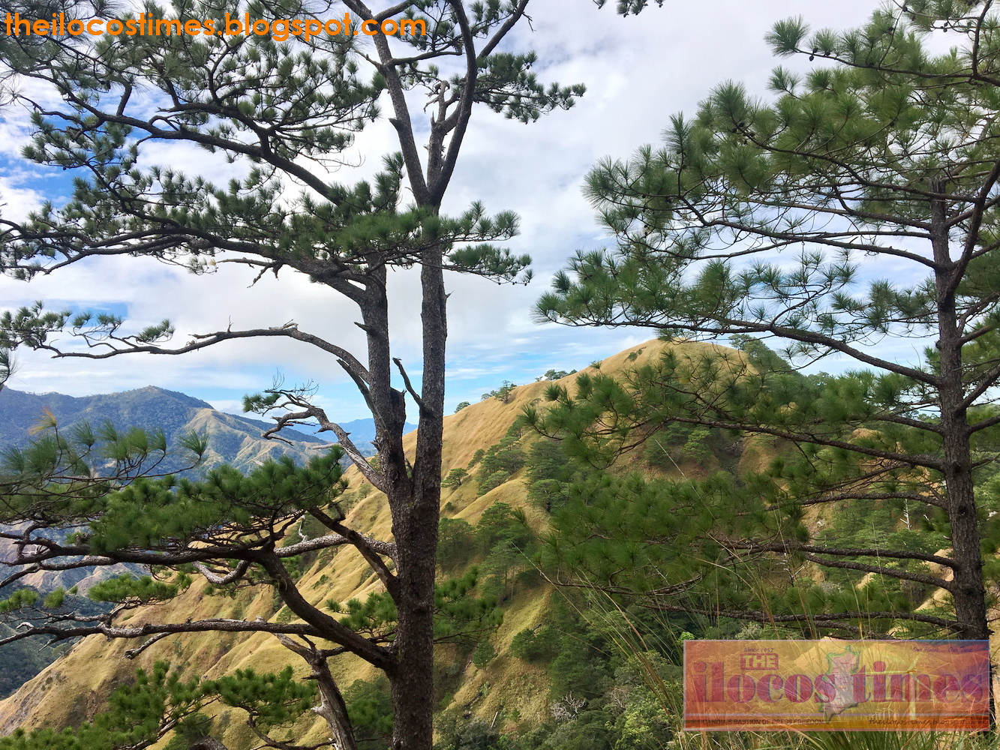
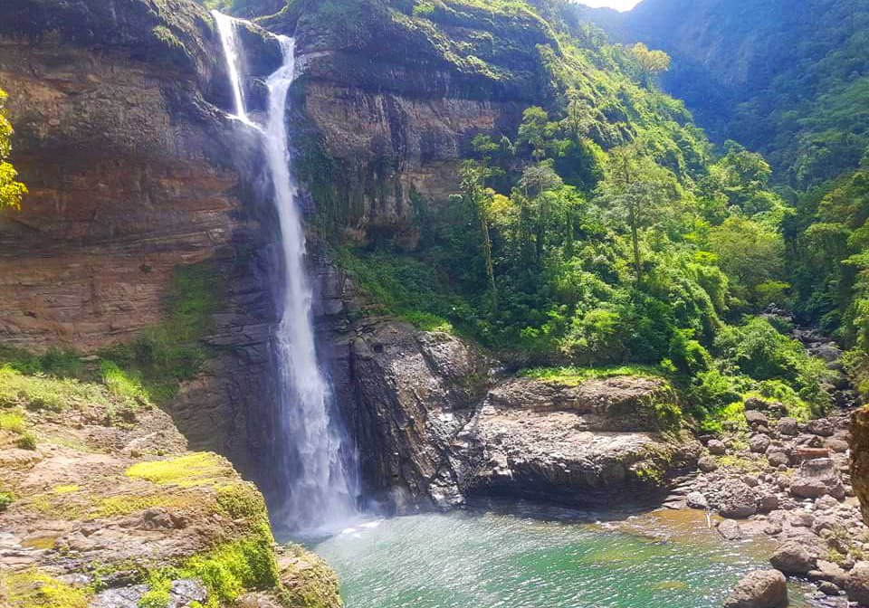
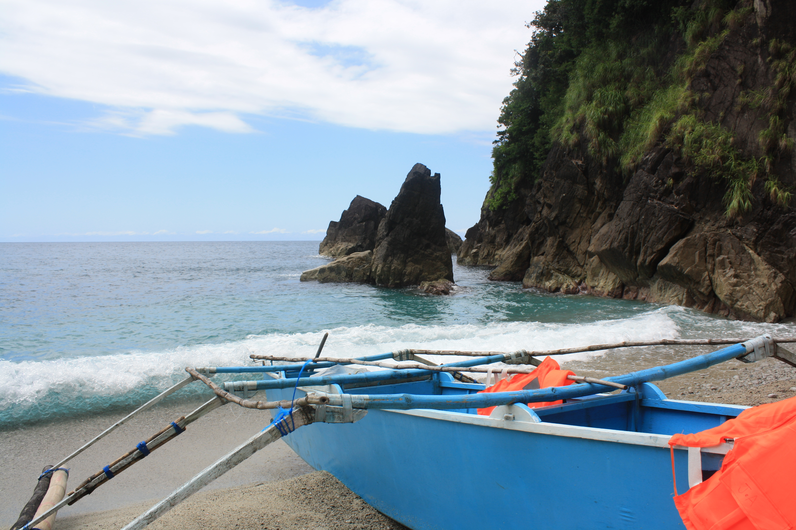
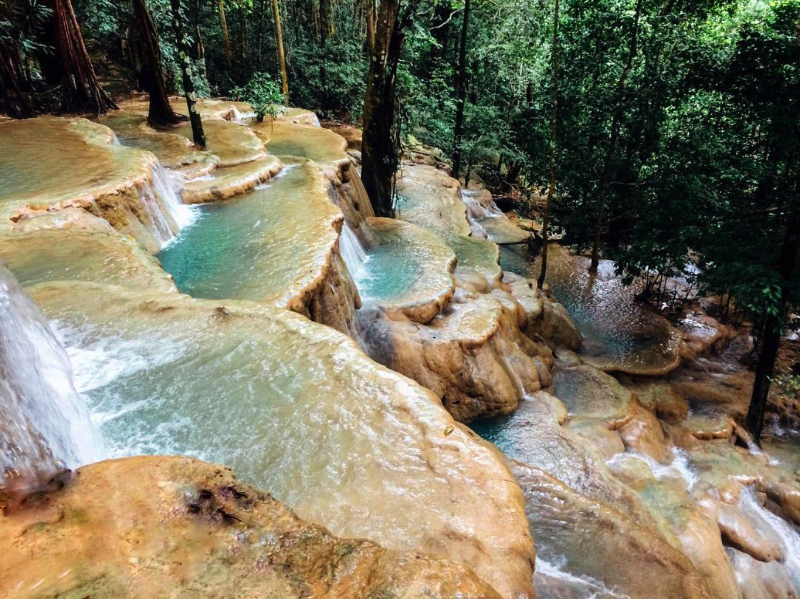

Region I

APAYAO ROAD
This road is a shortcut from Ilocos Norte to Apayao Province. This is a difficult road to travel since it's in a mountain, but because of its wonderful view of Mt. Kilang people are willing to go into the adventure. Thousands of curious visitors and mountaineers now ride a motorbike or a 4x4 off-road vehicle to reach the newly-opened highway linking the two provinces, where a view deck at the top offers them a picturesque sight of surrounding areas with rich flora and fauna, amid a sea of clouds.
HOW TO GO: When you reach the Banga Pot Landmark in San Nicolas, Ilocos Norte, go East and follow the national highway road until you reach the road. You can also use google map for the direction.

AW-ASEN FALLS
This falls is located at Sigay, Ilocos Sur. Its not actually the destination that makes it memorable, its the journey. It is not easy to go there that's why adventurer loves it. The tallest waterfall in Ilocos Region, Aw-asen Falls, is located in Sto. Rosario, Sigay, Ilocos Sur. The area of the falls is remote that keeps the place away from pollution, the water comes from a spring uphill, and it is so fresh that you can even drink from it.
HOW TO GO: Take the road going to Santiago, Ilocos Sur. Before reaching the Santiago bridge, turn right going to Banayoyo. Before reaching San Emilio, descend to Barangay Paltoc. Go straight until you passed by the town of Gregorio del Pilar. From here is a thirty-minute climb going to the town. From the town, coordinate with the municipal government going to the falls.
Note: The place mostly lacks signages so it’s better to ask the locals while traveling. And take caution as most roads are one-way.

PASALENG BAY
This beach can only be seen at Pagudpud, Ilocos Norte. People loves to visit this place because of its crystal clear water. Visitor can even go to the Makagutugot Cave nearby which is one boat ride away. This place is similar to Coron, Palawan that is why people visiting this place also called this place as Palawan of the North. HOW TO GO: Pasaleng Bay is located at Pasaleng, Pagudpud, the last barangay of Ilocos Norte going to the next province Cagayan. Ride a bus from Laoag that goes to Tuguegarao, Cagayan or any town of Cagayan, then tell the conductor that your destination is Pasaleng that goes to the Pasaleng Bay which takes around 3 hours. When you reach there, find a tricycle and tell them Pasaleng Bay if you can find one. If there isn't then just ask the locals, they are friendly people.
Region CAR

KAPARKAN FALLS
This falls is located at Tineg, Abra. This falls is something that you probably never even thought that could exist. What makes this unique is its uneven land forms which creates a beautiful water flow. Unlike most waterfalls in the Philippines, which are formed by roaring cascades, Kaparkan Falls is distinguished by multi-tiered spring pools/terraces that gently cascade down the forest. HOW TO GO: Kaparkan Falls is located in Tineg, the northernmost town of Abra. Getting there is an adventure in itself as it requires a 4 by 4 ride along very rough roads. The ride from Bangued takes around 2 to 4 hours, depending on road conditions. Tineg tourism department organizes transport on a military truck or jeepney. The trucks leave Bangued at 7-8am, while the return trip from the falls departs at 2pm. The months from August to November is the best and only time to schedule your trip since the waterfall dries up during the other half of the year.